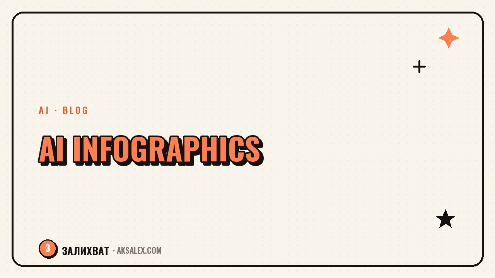

AI Infographics: Presenting Data in Your Blog

Why a blog needs infographics at all
Infographics work where text wears the reader out. A before-and-after comparison, a budget broken down by category, the stages of a process, niche statistics - all of that reads faster as a diagram than as a paragraph full of numbers. Posts like this get bookmarked more often: they're useful more than once, every time someone forgets a figure and comes back to check it.
There's a flip side too. If you have little data or it isn't structured, the infographic comes out empty - a pretty frame around three numbers that would have been simpler as plain text. An infographic pays off when a post has at least four or five comparable points or a clear trend over time.
Which AI tools are actually suited for infographics
The tools fall into two groups: those that assemble a ready layout from your text, and those that draw a picture from a description. For infographics with precise numbers the first group is more reliable - the second can distort a figure or a label, because it generates an image rather than a data structure.
| Tool | What it does | When to use it |
|---|---|---|
| Canva Magic Design | Builds an infographic layout from text and templates | A quick post, when you need a tidy look without design skills |
| Napkin AI | Turns a paragraph of text into a diagram or chart | When the data is already written as text and needs visualizing |
| Datawrapper | Builds charts and maps from a data table | Precise numbers, where an honest scale and labels matter |
| Flourish | Interactive and animated charts | Long reads and data with a trend over time |
| ChatGPT/DALL-E, Midjourney | Draw an illustrative image from a description | A cover or background, not an accurate rendering of numbers |
How to build an infographic step by step
1. Table first, picture second
Don't start with an image generator. First write the data into a short table: category and value. That immediately shows whether you have enough points for an infographic and whether there are any duplicates.
- Collect the numbers into a table: the name of the item and its value side by side
- Remove anything that doesn't compare directly with the rest
- Load the table into Datawrapper or describe it as text in Napkin AI
- Choose the type: bars for comparison, a line for a trend, shares for distribution
- Check the labels and numbers by hand - the AI isn't obliged to know your niche
2. Styling to match your blog
Once the structure is ready, bring the colors and fonts in line with your brand style in Canva. Keep one or two accent colors across the whole image, otherwise the eye can't tell what matters.
Common mistakes with AI infographics
The main trap is trusting the numbers to the AI entirely. An image generator can draw a beautiful chart where the percentages don't add up to a hundred and the labels don't match the values. Readers notice a picture like that faster than you'd think, and trust in the blog takes a hit.
An infographic isn't a picture about data, it's the data itself in another form. If the form is prettier than the content, better go back to the table.
- Don't use numbers the AI generated - only your real data
- Don't overload one image with more than seven or eight points
- Check that the shares in a pie chart actually add up
- Cite the data source if the numbers aren't your own
Where to get data if you don't have much of your own
Not every blogger has a table of numbers on hand. If you write about your niche, your own analytics can be the source: reach, engagement, the topics that land better than others. This is honest data, and readers find it interesting precisely because it comes from real experience rather than abstract statistics.
If the data is external - open platform reports, market research - always cite the source next to the infographic. It's not a formality: without a source link the picture looks made up, even if the numbers are real.
Frequently Asked Questions
Can I make an infographic entirely with AI, without a designer?
Yes, for a blog that's a normal route. Tools like Canva or Datawrapper handle the basic layout themselves; you only need a designer if you have a strict brand style or a complex, multi-layered diagram.
Which infographic format lands best in Reels or Stories?
Vertical, with one main figure or chart on the first screen. In Stories people swipe fast, and if the meaning doesn't read in a second, the picture gets scrolled past unseen.
What do I do if the AI miscalculated the percentages?
Always check the sum of the shares and the labels by hand before publishing. The AI visualizes what you gave it and isn't obliged to catch arithmetic errors in your data on its own.
Do I need to note that an infographic was made with AI?
There's no formal requirement, but if the data isn't your own, cite the source of the numbers - that matters more than mentioning the tool used to design it.
How long does an AI infographic take?
A basic chart or comparison takes fifteen to twenty minutes, including checking the numbers. A complex, multi-part diagram with several data blocks takes longer, mostly because of manual layout tweaks.
Enjoyed this one? Here's what to read next. An honest breakdown: where AI really saves a blogger time, and where it just creates the appearance of it.
Read the article →not by hand